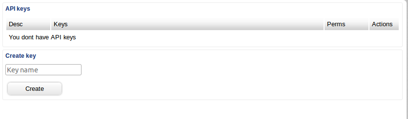

BTC-E Disputed Claims Group
1. Introduction
2. BTC-E Known Facts
3. BTC-E Fallacies
4. Questions
5. Rewards and Actions
6. Reporting criminal activities of BTC-E
7. Other resources
8. Contact us
9. Links to external claims

1. Introduction to BTC-E Disputed Claims Group
We are organizing users affected by BTC-E hackings, scams, frauds and malicious internal procedures and business practices. We provide advice as BTC-E often chooses to ignore claims at will and does not comply with the legacy legal requirements for claims settlements which applies to any exchange that handles both fiat currencies and cryptocurrencies. Furthermore, BTC-E does not comply with AML/KYC legislation which could make them vulnerable to lawsuits relating to money laundering.
If you have a disputed claim with the BTC-E Bitcoin Exchange, please contact us and we will try to help you to get in contact and report your claim to the legacy regulators (see below). If possible, we can also try to arrange one or several class action lawsuits against these individuals and entities.
The fastest way to get in touch with us is currently by
sending a private message to BTC-E Claims on Bitcointalk. (Please note that you need a registered account on Bitcointalk.org to be able to send us a message. Sorry for the inconvenience but the e-mail addess previously listed here was receiving spam.)
Admin
BTC-E Disputed Claims Group
2. BTC-E Known Facts - Please update information if available:
BTC-E was, according to theguardian.com, operated by Alexander Vinnik who was arrested in the end of July

Another BTC-E high profile is Alexey Demedov: Alexey Demedov "Balthazar" (Bitcointalk.org). Alexey has been involved with BTC-E operations and is also the developer behind Novacoin which was launched at BTC-E and proclaimed by several external sources to be a scam.
Furthermore, he is associated with the Moscow based firm "RusBiTech"
Alexey Demedov, "Balthazar" of BTC-E
The address of RusBiTech, the Moscow based company with which Alexey is involved
RusBiTech, location A, Moscow
RusBiTech, location B, Moscow

Sergey Mayzus, founder of Mayzus. Mayzus and OKPay have sent and received funds to BTC-E
Mayzus London
Mayzus Financial Services Ltd
Bldg 3, of. 201
Chiswick Park
566 Chiswick High Road
London W4 5YA
UK
Mayzus Cyprus
22 Georgiou Griva Digeni Avenue
Sergides Court
3106 Neapoli Limassol
Cyprus
3. BTC-E Fallacies
First and foremost, BTC-E does not provide a proper claims service. They will frequently ignore your e-mails if you have a claim, there is no phone number, the messages you receive (if any) will be sent without names, there is no contact address and so on. According to our estimations and the contacts we have had with affected users there are currently hundreds or even more than a thousand unsettled claims that are being willfully ignored by BTC-E. BTC-E and its representatives are operating an exchange which handles legacy fiat currencies but without complying with the regulations that apply for these kind of financial services.
There are a number of ways you can loose all of your funds on BTC-E.
It is possible to generate API keys without any e-mail confirmation requirements. These API keys can then be used to empty accounts without need for any e-mail confirmation. If an account is hacked the attacker can just generate API keys and then proceed by trading away funds on markets with low liquidity where another account will buy the cheap coins.

Even though the rest of the website is in English, the 2FA activation page suspiciously is in Russian only. It is possible that BTC-E consciously wants users not to activate the 2FA so that they can empty the account together with "third party hackers" and then blame the users for not activating the 2FA.
Even more suspiciously, when a user tries to activate the 2FA he or she will often receive an error message such as this, which further points in the direction of BTC-E alleviating inside jobs by maliciously retaining vulnerabilities in the platform.
4. Questions
What is the most efficient way for affected users to organize themselves and file class action claims and similar measures against BTC-E and its representatives?
How have you been affected by BTC-E malicious business practices?
5. Rewards and Actions
5000 USD (in Bitcoin or equivalent) - to any individual or team that can help in the settling of a particular claim. Contact us for more details.
Add your own reward here - Ask for more details.
Tip CoinDesk, CoinTelegraph and other Bitcoin news media about your claim.
6. Reporting criminal activities
Here are links for reporting the above actors to the legacy regulators. Contact us and we will try to help you with the process:
Report BTC-E, Alexey Demidov and Sergey Mayzus to FinCen
FinCen is the financial regulator in North America (BTC-E has a large number of North American customers).
Report BTC-E, Alexey Demidov and Sergey Mayzus to Cyprus Financial Authorities
For now this link leads to the Central Bank of Cyprus page about Prevention and suppression of money laundering activities and financing of terrorism
7. Other resources
Here are some other links to previous claims and other relevant resources.
Alexander Vinnik arrested
BTC-E Attacked
BTC-E has made several newslines in the past
Cryptsy Owner Paul Vernon faces lawsuit
Paul Vernon of Cryptsy was sued and the same could and propably should occur to BTC-E and its representatives as they do not provide third party claims settlement
BTC-E Selectively scamming
There has been accusations that BTC-E are selectively scamming customers in minor and major ways
How much profit does BTC-E make
Silver Law Group files lawsuit against Cryptsty
Bittrust Rating BTC-E
BTC-E Attacked
8. Contact us
The fastest way to get in touch with us is currently by
sending a private message to BTC-E Claims on Bitcointalk. (Please note that you need a registered account on Bitcointalk.org to be able to send us a message. Sorry for the inconvenience but the e-mail addess previously listed here was receiving spam.)
9. Links to external claims